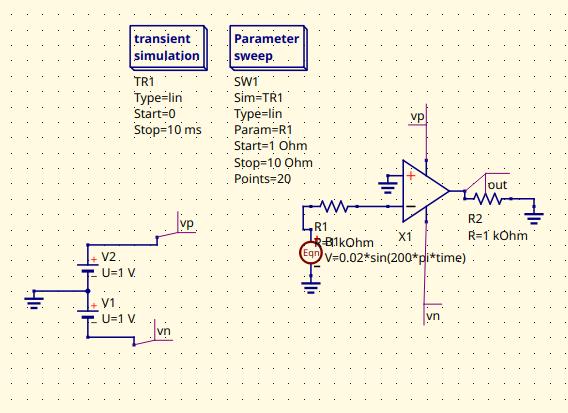
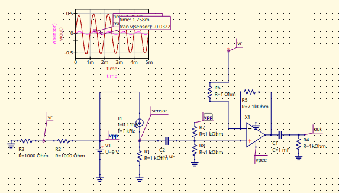
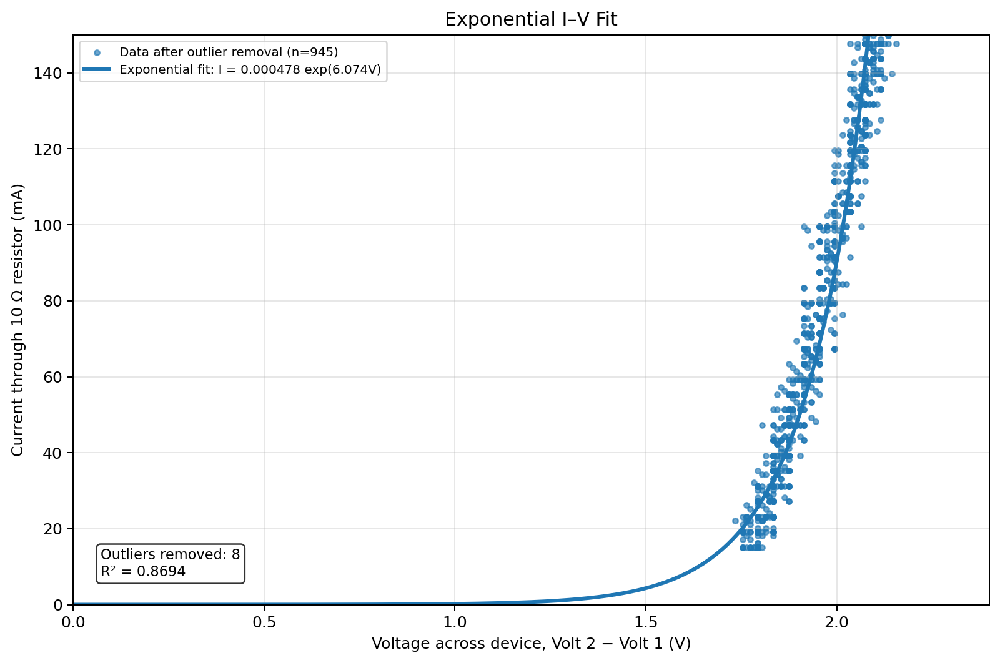

Electrical and computer engineering student developing practical circuit-design, analysis, and troubleshooting skills. This portfolio presents selected EC EN 340 work and explains the engineering problems, my contributions, the outcomes, and the skills demonstrated by each artifact.
A focused collection of course work showing how I approach electronic circuit design problems.
Introduction
I am an electrical and computer engineering student building a foundation in electronic circuit design. In EC EN 340, I have worked with op-amp circuits, simulation, signal conditioning, component characterization, and hardware troubleshooting. I am particularly interested in learning how circuit theory translates into functioning hardware and how measurements can be used to identify the source of a problem.
This portfolio is organized for an engineering audience. Each artifact identifies the problem being addressed, my contribution, the result, and the technical abilities the work demonstrates. The collection includes simulation and design work as well as projects that connect analysis to physical circuit construction and testing.
Course: EC EN 340 — Electronic Circuit Design
02 · Navigation
Portfolio contents
Use these links to move directly to each selected artifact or reflection.
These four artifacts show progression from circuit simulation and amplifier design toward component-level characterization, physical implementation, and troubleshooting. The final two entries are structured for the lab evidence you plan to add.
1Op-amp design · Simulation
Op-Amp Buffer for a Sensor

Artifact 1 — op-amp buffer schematic and simulation evidence.
Problem: Design a simple buffer for a sensor modeled as 0.02sin(200πt) V with a 100 kΩ source resistance. The buffer must preserve the signal while driving a load that varies from 1 kΩ to 10 kΩ.
My contribution
I developed and evaluated a buffer configuration in SPICE, kept the schematic organized with clear node labels, and used simulation results to assess how the circuit handled the sensor's source resistance and the specified load.
Result
The simulated design showed the expected buffer behavior: it preserved the sensor signal while reducing the loading effect on the source. Add or retain your final simulation plot here as evidence of the output behavior.
What this demonstrates
Understanding of voltage buffering, source and load resistance, op-amp configuration, and the use of simulation to evaluate a design against its requirements.
2Amplifier design · Filtering
Amplifier for a Light-Following Robot

Artifact 2 — amplifier schematic and simulation evidence.
Problem: Design an amplifier for a light-following robot using a sinusoidally varying flashlight signal, while reducing sensitivity to room light. The input is an AC current with 0.1 mA peak-to-peak amplitude connected to a 1 kΩ resistor to ground.
My contribution
I explored filter options and op-amp configurations, compared their behavior using NGspice, and organized the schematic so the signal path and important nodes were clear. I evaluated the output amplitude and average voltage against the design requirements.
Result
The simulated output met the target peak-to-peak amplitude of 1 V ±5% and the average-output requirement of less than 1 mV. The comparison of configurations helped me understand how gain and filtering affect the desired signal and unwanted components.
What this demonstrates
Amplifier design under power-supply and circuit constraints, filter selection, quantitative verification, and technical communication through a readable schematic.
3Add final board photo and resultsPCB design · Hardware · Troubleshooting
Laser Tag Analog Interface Board
Artifact 3 — add a clear photograph of the completed two-sided analog interface PCB.
Problem: Design and build an optical transmitter and receiver interface for the EC EN 390 Laser Tag project. The board operates from a 3.3 V supply and must detect the specified player-frequency signals while limiting noise and maintaining less than 3 dB variation across player frequencies.
My contribution
I worked on the analog interface design and its physical implementation as a printed circuit board. The lab required a receiver amplifier for the photodiode signal, transmitter circuitry to drive the LED, a four-connection interface header, measurement points, and a two-sided board layout. Update this paragraph with the specific design, layout, soldering, testing, and troubleshooting tasks you personally completed.
Result
Complete after final testing: Insert the measured receiver signal/noise result, frequency-response result, and whether the finished PCB met the lab specifications. Do not claim passoff until you have verified it with your measurements.
What this demonstrates
Translating a circuit design into a physical PCB, integrating transmitter and receiver functions, planning measurement points, and using test data to diagnose circuit behavior. This artifact can also show how I narrow an unwanted result to a particular component or circuit stage.
4Add your best-fit plot and calculationsLED characterization · Data analysis · Modeling
LED Current-Voltage Characterization and Model Fit

Artifact 4 — add the measured LED I–V data and fitted model curve.
Problem: Characterize an LED's current-voltage relationship and develop a model using the diode parameters IS, N, and series resistance RS. The model is then used to predict resistor values for LED currents of 10 mA and 100 mA with a 5 V supply.
My contribution
I used the circuit and diode relationships developed in class to interpret the measured I–V behavior and determine model parameters. I also used AI as an analysis aid to generate the best-fit visualization from the calculations and design requirements. The calculations and specified requirements—not the AI output by itself—provide the engineering basis for evaluating the fit. Add the exact calculations, parameter values, and what you personally checked or adjusted.
Result
Complete after inserting your data: Report the fitted values of IS, N, and RS, and compare simulated and measured currents at the two resistor values. Include the percentage error and state whether the model is within the lab's 5% target.
What this demonstrates
LED characterization, nonlinear device modeling, using measured data to fit a circuit model, applying calculations to component selection, and evaluating AI-assisted analysis against engineering requirements.
04 · Iteration and feedback
Revision Based on Feedback
This section makes the development of the portfolio visible rather than presenting it as a finished collection without context.
Changes in this checkpoint draft
Reorganized the page around a professional introduction, direct navigation, four selected artifacts, and a reflection.
Revised each artifact to identify the engineering problem, my contribution, the result, and the skill or knowledge it demonstrates.
Expanded the portfolio beyond simulation-only work to include physical PCB implementation and measured component characterization.
Added a specific explanation of troubleshooting and data analysis as developing strengths.
Add the specific feedback you received:
Periodic changes have been made to each project, usually relating to selected components from ideal calculated values to measured values.
05 · Reflection
Design Journey
What has changed in my approach to circuit design during EC EN 340.
What I can do now
At the beginning of the semester, I did not have the same ability to troubleshoot circuit-design problems systematically. I can now identify fundamental circuit issues, use measurements and data to understand why a circuit is producing an undesired result, and narrow the likely cause to specific components or stages on the board. Rather than treating an unexpected output as one general problem, I can use evidence to investigate where the problem is occurring.
How my approach has developed
I have become more comfortable connecting calculations, circuit models, simulation, and physical measurements. I am learning to compare what a design should do with what the actual circuit does, then use that difference to guide troubleshooting. The variety of projects has helped me see that circuit design involves more than producing a working schematic: it also requires selecting components, testing assumptions, interpreting data, and communicating results.
Next step: Continue improving the connection between predicted and measured circuit behavior. For each hardware project, document the relevant measurements, identify discrepancies, and explain how the evidence led to a specific design or component-level adjustment.
06 · BYU learning connection
Intellectually Enlarging
Connecting practical engineering work with a BYU Aim.
The variety of projects in EC EN 340 has been intellectually enlarging because each project requires me to approach electronic systems from a different perspective. I have worked with amplifier design, filtering, circuit simulation, PCB layout, LED characterization, and hardware troubleshooting. Seeing these topics in different contexts has expanded my understanding beyond memorizing individual circuit principles.
Building and testing circuits has also helped me understand engineering fundamentals in a more practical way. Concepts such as current, voltage, resistance, gain, filtering, and device models become more meaningful when I use them to make design decisions and then compare those decisions with actual measurements. This experience reflects the BYU Aim of becoming intellectually enlarged: I am learning to connect theory with real engineering problems, ask better questions about unexpected results, and use evidence to improve a design.